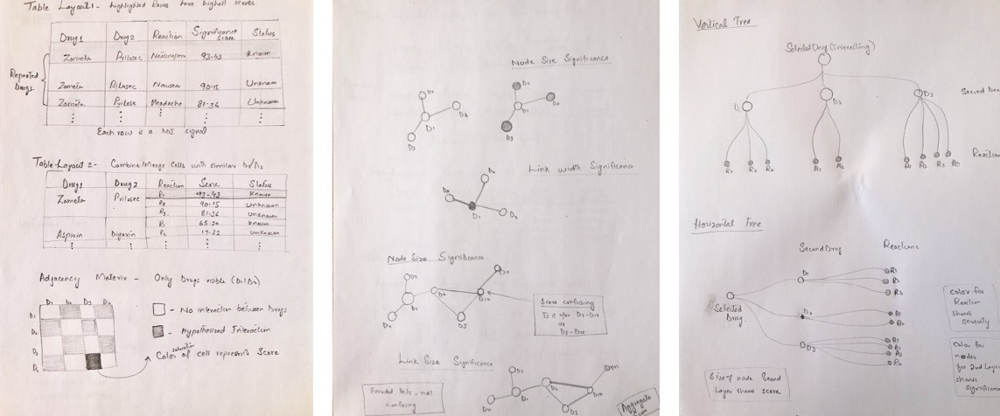
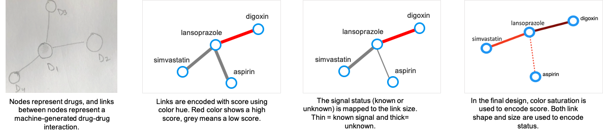

Drug-drug Interactions - Huge Healthcare Problem
The expanded use of multiple drugs has increased the occurrence of adverse drug reactions induced by drug-drug interactions (DDIs). In the U.S., adverse reactions cost 100,000 deaths and $170 billion annually.

Challenge
Currently, adverse reaction signals are detected through a tedious manual process in which drug safety evaluators review a large number of reports collected through
post-marketing drug surveillance programs.
Recently developed machine learning techniques for these reports generate even a larger number of hypothesized DDI signals that are difficult to interpret, are disconnected
from the underlying reports important for providing context, and require human judgement to be validated
in the domain context as a true signal warranting action.
The goal of this project is to design an interactive visual analytics system (DIVA) that aligns with the drug safety analysis workflow to support the screening and verification of
hypothesized drug-drug interaction signals.
Team
I led all the research, design, and development activities of this project and collaborated with FDA stakeholders, domain experts, researchers, and data scientists.
User Research
Target Users
Our users for DIVA are drug safety evaluators at the Division of Pharmacovigilance (DPV) at the FDA who are responsible for the detection of drug safety signals, that is, adverse reactions.
Key Research Questions and Areas
- How drug safety reports are analyzed?
- What are the key challenges users currently face?
- Observe and understand users' current review process.
Methodology
The user research took a total of two weeks and included the following activities with five users.
- Week 1 (Phase 1). 45 minutes remote interviews to get an overview of their workflow.
- Week 2 (Phase 2a). 30 minutes contextual inquiry to observe users at work.
- Week 2 (Phase 2b ). 30 minutes in person interviews for follow-up discussion and clarification.
User Workflow
Based on our interviews in Phase 1, the drug safety review workflow is summarized below.
User Feedback
"I first look for reports with a serious outcome such as death or hospitalization."
"If it is a designated medical event (DME) or rare reaction, I will open that report."
"We review direct reports as a priority, as we are the first ones to look at them."
Affinity Diagram
Based on the user research, an affinity diagram was created to identify and group users' needs and concerns.
Design Requirements
Based on the user research, the following features were identified as high priority for the visual analytics to help in the analysis of the hypothesized DDI signals.
- Provide an overview of all hypothesized signals.
- Allow analysts to segment and prioritize signals.
- Integrate information about previously known (discovered) signals.
- Facilitate identification of unknown (undiscovered) signals.
- Facilitate identification of severe adverse reactions.
- Ready access to evidence (reports) supporting signals.
Design Process
Hypothesized Signals Data
Based on our user research, we integrated domain knowledge into an already complex DDI signal generated by machine learning. The final data model to be visualized consists of the following elements.
- The two interacting drugs (DDI).
- A set of adverse reactions associated with the DDI.
- A numeric score (machine learning metric) that represents the significance of the signal.
- Domain knowledge about the signal status being known or known.
- Domain knowledge about the signal having a severe reaction (DME).
Supported Tasks
Based on our user research, the system should support users in the exploration of these hypothesized signals, where they can interactively screen and prioritize important signals i.e., highly scored and unknown signals, and analyze them to see if further investigation is needed.
Literature Review
To start, we reviewed academic research papers and other published best practices for designing visualizations for machine-learning output and drug related information. In addition to the required features, we learned some best practices and guidelines for designing multiple coordinated views - such as 'details on demand, 'selecting chart types based on the data and task', and 'direct manipulation of data'.
Visual Design and Prototypes
Given the complexity of the DDI signals and user tasks, designing a single visualization is not feasible. Based on literature review and heuristic analysis of different visualization techniques for the underlying data, we considered various visualizations.

To help users explore the set of all the machine-generated drug-drug interactions (DDIs) the first suitable candidate is an Adjacency Matrix (below figures). Due to sparsity of the matrix for real data, alternatively, a node-link diagram is designed.
In the node-link diagrams (following figure), the nodes are mapped to the drugs and the links depict the interaction between drugs. The visual encodings, i.e., color and size of
the links (Screening view) and nodes (Triage view) are mapped to the significance score of the signals and status of the reactions, respectively.

The node-link design for all the views are iteratively refined to choose the most suitable visual encodings
for mapping the underlying signals data.
Final Visual Design
DIVA (shown below) consists of three coordinated views to help with the drug safety tasks.
The Screening View (Left) gives an overview of all hypothesized drug-drug interactions supporting a user in screening unknown and
high scored signals. Each node is a drug, and link depicts an interaction between the drugs.
The Triage View (Middle) displays all the drug interactions associated with a particular
drug (depicted as middle blue node). It helps users prioritize a drug for review based on its intearctions.
The Forensics View (Right) uses a tree diagram that includes adverse reactions (third layer of nodes) related to each
drug-drug interaction for further exploration. The purple color is used to highlight severe reactions.
DIVA Validation
For evaluation, case studies followed by brief interviews were conducted with ten users at the FDA.Case Study
This case study demonstrates the effectiveness of DIVA in interpretting and identifying interesting DDI signals generated by machine learning that need validation.
During exploration of DIVA, the user identifies Lansoprazole with a high scored (dark color) unknown interaction with Digoxin in the Screening view. The user investigates this DDI further in the Forensics view
and notices a serious reaction (Acute Kidney Injury).
Upon reviewing the reports, the user discovers that other drugs taken by the patient in these reports might be the underlying
reason for this severe reaction.

Qualitative User Feedback
"It is easy to differentiate DMEs from non-DMEs through the highlights, as compared to reading the list or trusting one's memory."
"Having the ability to highlight interesting and highly scored signals is very effective in narrowing down our investigation."
"This has not been done before, it is very useful and aligns with our workflow."
Takeaways
DIVA is a step towards making machine-learning adaptable to the novice users. There are many directions to explore this project further. For instance, to reduce the visual clutter in the Screening view, drug classes can be integrated to group signals associated with drugs in the same class. Also, domain knowlege such as including the symptoms for which drugs were taken can be helpful.
This project gave me the opportunity to leverage and improve my skills as a user researcher, a designer, and a data scientist.
Related publications
For more details on this problem and the design process, please read the following publications.
- Kakar, Tabassum, Xiao Qin, Elke A. Rundensteiner, Lane Harrison, Sanjay K. Sahoo, and Suranjan De. "DIVA: Exploration and Validation of Hypothesized Drug-Drug Interactions." In Computer Graphics Forum (EuroVis), vol. 38, no. 3, pp. 95-106. 2019.
- Kakar, Tabassum, Xiao Qin, Andrew Schade, Brian McCarthy, Huy Quoc Tran, Brian Zylich, Elke Rundensteiner, Lane Harrison, Sanjay K. Sahoo, and Suranjan De. "DEVES: interactive signal analytics for drug safety." In Proceedings of the 27th ACM International Conference on Information and Knowledge Management (CIKM), pp. 1891-1894. 2018.